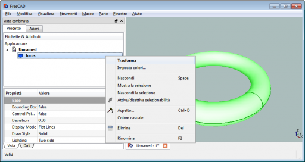
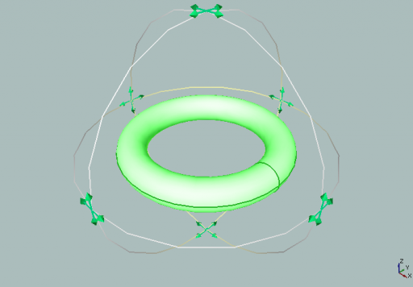
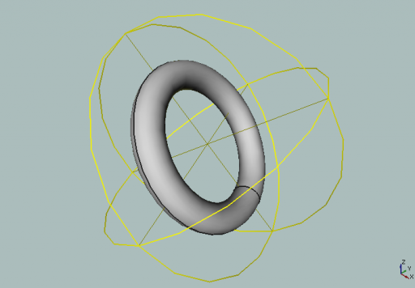
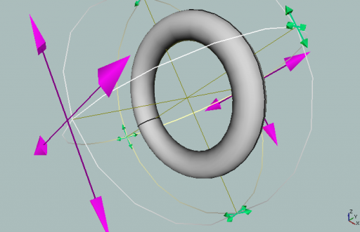
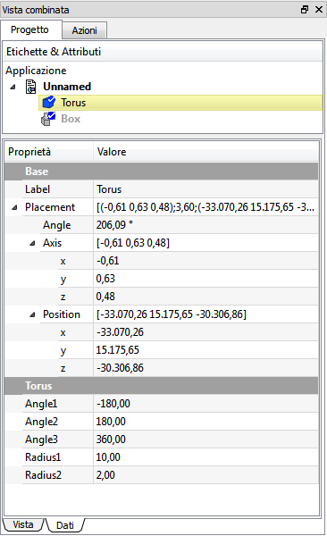

Un manipolatore è una maniglia che può essere utilizzata per modificare l'aspetto, la forma, o altri parametri di un oggetto.
Cliccare con il tasto destro su un oggetto Parte nell'albero del progetto e selezionare Trasforma.

L'oggetto viene avvolto da una serie di orbite, secondo gli assi. Negli incroci di queste orbite sono pesenti delle frecce di direzione.
Le frecce descrivono la direzione in cui è possibile eseguire la rotazione secondo la corrispondente orbita.
Per selezionare un'orbita cliccare su una parte esterna della stessa.

Per selezionare tutte le orbite cliccare su una parte interna di una qualunque.
Quando tutte le orbite sono selezionate l'oggetto può essere ruotato in qualsiasi modo, secondo i movimenti del mouse.

Per attivare la traslazione dell'oggetto cliccare sulle frecce di direzione che assumono il colore rosso. Muovere il mouse.

Controllare nella scheda dati i valori della posizione ed eventualmente modificarli.

Uscire dalla funzione con il tasto Esc.
Notare che questo comando è differente dai comandi Ruota e Sposta. Esso muove solo l'oggetto senza modificare la posizione dei piani, osservare che l'icona degli assi rimane sempre nella stessa posizione.
Con il tasto Ctrl premuto, alternando la pressione sul destro e sul sinistro del mouse si possono produrre azioni di trasformazione simili.
Questa descrizione vale solo fino alla versione 0.13 di FreeCAD
FreeCAD offre strumenti manipolatori utilizzabili per modificare un oggetto o il suo aspetto visivo. Un semplice esempio è il Piano di taglio attivabile con il menu Visualizza → Piano di taglio. Dopo l'attivazione il piano di taglio appare nell'oggetto e sono mostrati sette manipolatori a forma di piccole scatole: Uno su ciascuna estremità dei tre assi e uno al centro dell'asse del piano normale. Ci sono inoltre quattro manipolatori non visibili: Il piano stesso e la parte sottile dei tre assi.
{kind=link}
{kind=link}
{kind=link}
{kind=link}
{kind=link}
{kind=link}